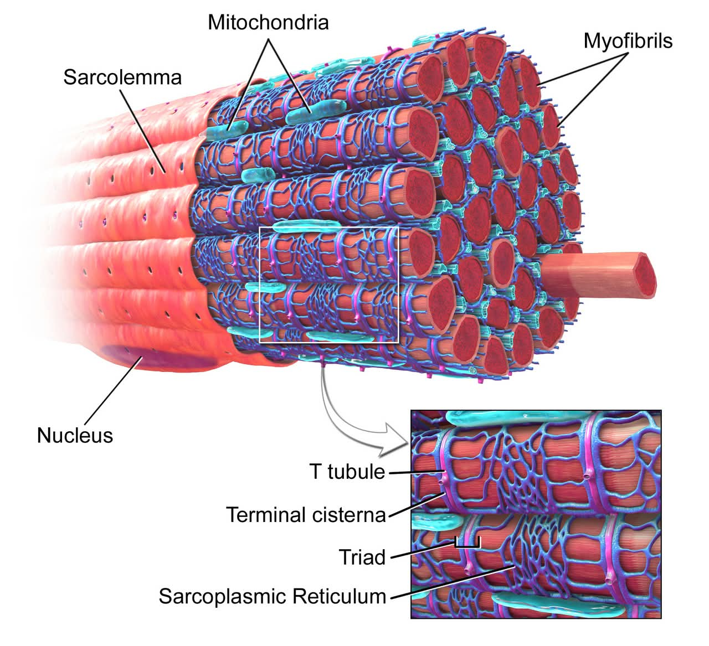
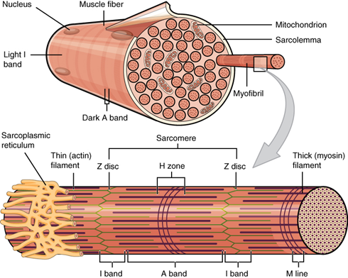
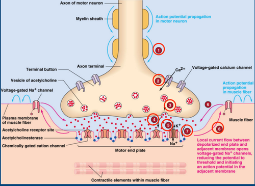
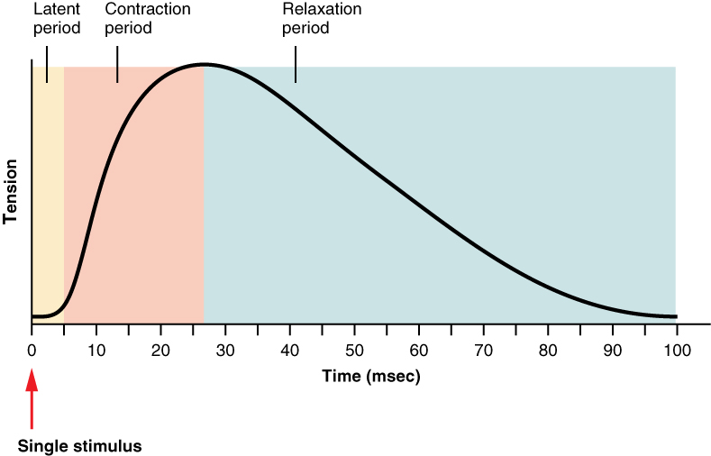
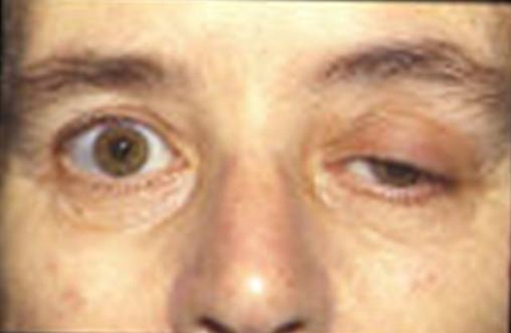

Arnold, W. D., & Clark, B. C. (2023). Neuromuscular Junction Transmission Failure in Aging and Sarcopenia. Ageing Research Reviews, 89. Link
Badawi, Y., & Nishimune, H. (2020). Impairment Mechanisms and Intervention Approaches for Aged Human Neuromuscular Junctions. Frontiers in Molecular Neuroscience, 13. Link
Barker, J., et al. (2024). TRU Human Anatomy & Physiology. Thompson Rivers University.
Fralish, Z., et al. (2021). Neuromuscular Development and Disease. Frontiers in Cell and Developmental Biology, 9. Link
Ginting, D. S., et al. (2022). Anatomi Fisiologi Tubuh Manusia. PT Global Eksekutif Teknologi.
Gopalan, C. (2026). Essentials of Physiology for Nurse Anesthetists.
Herzog, W. (2024). Sliding Filament Theory. Encyclopedia of Neuroscience. Link
Iyer, S. R., Shah, S. B., & Lovering, R. M. (2021). The Neuromuscular Junction: Roles in Aging and Neuromuscular Disease. International Journal of Molecular Sciences, 22(15). Link
Madri, M. (2017). Kontraksi Otot Skelet. Jurnal Menssana, 2(2).
Mustafa, P. S. (2023). Pertumbuhan dan Perkembangan Otot, Tendon, Ligamen. Medika: Jurnal Ilmiah Kesehatan, 3(2).
Nishimune, H., & Shigemoto, K. (2019). Practical Anatomy of the Neuromuscular Junction. Neurol Clin, 36(2). Link
Putra, R. T., Utomo, A. W., & Primiani, C. N. (2022). Anatomi Otot dan Latihan Beban Dalam Olahraga. UNIPMA Press.
Ramadan, A., et al. (2025). Expansion Microscopy Reveals Nano-Scale Insights into the Human Neuromuscular Junction. Cell Reports Methods, 5. Link
Sousa-Victor, P., et al. (2021). Control of Satellite Cell Function in Muscle Regeneration. Nature Reviews Molecular Cell Biology, 23. Link
Sousa‑Soares, C., et al. (2023). Purinergic Tuning of the Tripartite Neuromuscular Synapse. Molecular Neurobiology, 60(7). Link
Toniolo, L., & Giacomello, E. (2020). Muscle Fatigue. International Journal of Industrial Ergonomics.
Wang, Q., et al. (2024). Effects of Physical Exercise on Neuromuscular Junction Degeneration During Ageing. Journal of Orthopaedic Translation, 46. Link
Wang, Y., & Liu, C. (2026). Thermodynamically Consistent Modeling of ATP-Driven Cross-Bridge Dynamics. Biophysical Journal, 131. Link
Wangko, S. (2014). Jaringan Otot Rangka: Sistem membran dan struktur halus unit kontraktil. Jurnal Biomedik, 6(3).
Yartsev, A. (2023). The Mechanism of Excitation-Contraction Coupling. Deranged Physiology. Link
PETA PEMBELAJARAN
Buka materi secara bertahap dengan mengklik kartu di bawah ini:
× Kembali ke Peta Pembelajaran
Anatomi Makroskopis Otot Rangka
Sistem muskular adalah alat gerak aktif: kontraksi otot menarik tulang melalui tendon, sedangkan tulang merupakan alat gerak pasif. Sistem ini menghasilkan gerak, mempertahankan postur, menstabilkan sendi, menghasilkan panas, dan menyimpan glikogen. Tubuh memiliki lebih dari 600 otot yang menyusun sekitar 40-50% berat tubuh. Aktivitasnya berhubungan erat dengan sistem saraf (Ginting et al., 2022; Putra et al., 2022).
1. Jenis-Jenis Otot
Gambar 2.3 Jenis-Jenis Otot
Otot Rangka (Otot Lurik): Melekat pada tulang, bekerja secara volunter (sadar) untuk menghasilkan gerakan tubuh. Memiliki sifat kontraktilitas, eksitabilitas, konduktivitas, ekstensibilitas, dan elastisitas.
Otot Halus (Polos): Terdapat pada dinding organ dalam seperti usus, lambung, dan pembuluh darah. Bekerja secara involunter (tidak sadar) untuk mengatur aliran zat.
Otot Jantung: Hanya ditemukan di dinding jantung. Bekerja secara involunter, bergaris-garis seperti otot rangka namun memiliki diskus interkalaris untuk memompa darah secara ritmis.
2. Anatomi Makroskopis Jaringan Ikat
Gambar 2.2 Letak Ligamen dan Tendon
Gambar 2.5 Struktur Anatomi Makroskopis
Epimisium: Lapisan jaringan ikat paling luar yang membungkus seluruh bagian otot. Memisahkan otot dari jaringan sekitar serta mengandung pembuluh darah dan saraf utama.
Perimisium: Lapisan jaringan ikat yang membungkus satu fasikulus (kumpulan serat otot). Tersusun atas serat kolagen dan elastis serta mengandung pembuluh darah suplai.
Endomisium: Lapisan jaringan ikat paling dalam yang membungkus tiap-tiap serat/sel otot individu, terletak tepat di luar sarkolema.
Tendon: Jaringan ikat fibrosa penyuplai gaya dari otot ke tulang. Origo: Ujung otot yang melekat pada tulang yang diam/tetap. Insersio: Ujung otot yang melekat pada tulang yang bergerak saat kontraksi.
Ciri Histologis Otot Rangka
Terdiri atas serat otot panjang, tidak bercabang, multinukleat dengan nukleus di perifer. Memiliki striasi melintang pita A (gelap) dan pita I (terang).
Struktur Mikroskopis Serat Otot
Serat otot rangka berbentuk silindris panjang dengan miofibril memanjang yang menampilkan pita gelap dan terang. Sistem membrannya terdiri atas sarkolema, tubulus T, dan retikulum sarkoplasma; ketiganya penting untuk penghantaran rangsangan dan kontraksi (Wangko, 2014).

Gambar 2.6 Struktur Anatomi Mikroskopis Serat Otot
Sarkolema: Membran plasma sel otot yang mengelilingi sarkoplasma. Berperan mengalirkan potensial aksi dan membentuk invaginasi ke arah dalam sel.
Tubulus T & Triad: Saluran melintang invaginasi sarkolema. Tubulus T diapit dua sisterna terminalis membentuk Triad, meneruskan sinyal listrik langsung ke retikulum sarkoplasma.
Retikulum Sarkoplasma: Sistem membran intraseluler penyimpan ion Ca²⁺. Melepaskan Ca²⁺ ke sarkoplasma saat rangsangan tiba dan memompanya kembali saat relaksasi.
Miofibril & Miofilamen: Elemen kontraktil berbentuk silinder yang tersusun atas protein kontraktil (aktin & miosin), protein regulator (troponin & tropomiosin), dan protein struktural (titin).
Struktur Molekuler Sarkomer
Sarkomer adalah unit kontraktil terkecil yang membentang dari garis Z ke garis Z. Filamen tidak memendek; aktin dan miosin bergeser relatif sehingga garis Z mendekat, pita I serta zona H memendek, sedangkan pita A relatif tetap.
Gambar 2.7 Struktur Molekular Sarkomer
Gambar 2.8 Troponin dan Tropomiosin

Gambar 2.9 Anatomi Serat Otot dan Sarkomer
Filamen Tebal (Miosin): Protein motorik dengan bagian kepala yang memiliki aktivitas ATPase untuk mengikat aktin dan memecah ATP menjadi gaya mekanis.
Filamen Tipis (Aktin): Tempat pengikatan kepala miosin yang membentuk rantai heliks ganda memanjang dari garis Z.
Titin: Protein elastis raksasa yang menambatkan miosin ke garis Z, menjaga kestabilan posisi filamen tebal di tengah sarkomer.
Troponin & Tropomiosin: Tropomiosin menutupi situs aktif aktin saat relaksasi. Ikatan Ca²⁺ pada Troponin C mengubah konformasi sehingga situs aktif terbuka.
Garis Z: Batas antar sarkomer. Garis M: Bagian tengah sarkomer penahan filamen tebal miosin.
Pita A: Daerah gelap berisi seluruh filamen tebal. Pita I: Daerah terang berisi filamen tipis saja. Zona H: Bagian tengah Pita A yang hanya berisi filamen tebal.
Tautan Neuromuscular & Asetilkolin
Neuromuscular junction (NMJ) merupakan sinapsis khusus yang menghubungkan neuron motorik dengan serabut otot rangka melalui pelepasan asetilkolin (ACh) untuk mengubah impuls saraf menjadi aksi mekanis.
1. Struktur Anatomi NMJ
Gambar 2.11 Anatomi Neuromuscular Junction
Presynaptic Terminal: Ujung akson neuron motorik yang kaya mitokondria dan vesikel sinaptik berisi Asetilkolin (ACh).
Synaptic Cleft: Celah 30-50 nm berisi matriks ekstraseluler dan enzim asetilkolinesterase (AChE).
End Plates: Membran otot berlipat-lipat (junctional folds) dengan reseptor ACh nikotinik padat.
2. Tahapan NMJ dan Pelepasan Asetilkolin

Gambar 2.12 Mekanisme NMJ dan Pelepasan Asetilkolin
Potensial aksi menjalar sepanjang akson hingga tiba di terminal pra-sinapsis.
Kanal kalsium gerbang tegangan terbuka, ion Ca²⁺ masuk ke dalam terminal saraf.
Ca²⁺ memicu eksositosis vesikel sinaptik untuk melepaskan neurotransmiter ACh.
ACh berdifusi menyeberangi celah sinaptik menuju membran pasca-sinapsis.
ACh berikatan dengan reseptor nikotinik di pelat ujung motorik.
Kanal kation terbuka, ion Na+ masuk melimpah memicu depolarisasi lokal.
Potensial pelat ujung merambat menjadi potensial aksi sepanjang sarkolema.
Enzim AChE dengan cepat mendegradasi ACh untuk mengakhiri rangsangan.
Sliding Filament Theory
Teori pergeseran filamen menjelaskan bahwa kontraksi otot terjadi karena pergeseran relatif aktin dan miosin tanpa perubahan panjang filamen itu sendiri.
Gambar 2.14 Inisiasi Kontraksi Otot
Gambar 2.15 Tahapan Sliding Filament Theory
Potensial aksi merambat masuk melalui Tubulus T.
Retikulum sarkoplasma melepaskan cadangan ion kalsium ke sitosol.
Ca²⁺ berikatan dengan troponin C, menggeser tropomiosin.
Kepala miosin berikatan dengan situs aktif aktin membentuk cross-bridge.
Miosin melakukan kayuhan daya (power stroke) menarik filamen aktin ke pusat sarkomer.
ATP baru berikatan untuk melepaskan kepala miosin dari aktin.
Dinamika Struktur Sarkomer Saat Kontraksi
Gambar 2.16 Sarkomer saat Mengalami Kontraksi
Komponen
Perubahan saat Kontraksi
Garis Z
Bergerak saling mendekat, sarkomer memendek
Pita I
Memendek/mengecil
Zona H
Memendek dan dapat menghilang total
Pita A
Panjangnya relatif TETAP
Filamen Aktin & Miosin
Panjangnya TETAP, hanya bergeser posisi
Relaksasi Otot & Pompa Kalsium
Relaksasi otot terjadi ketika stimulasi saraf terhenti dan ion Ca²⁺ dipompa kembali ke dalam retikulum sarkoplasma menggunakan energi ATP.
Gambar 2.17 Inisiasi Relaksasi Otot
Gambar 2.18 Rangkaian Proses Kontraksi & Relaksasi
Impuls saraf dari motor neuron terhenti.
Membran sarkolema mengalami repolarisasi kembali ke potensial istirahat.
Pompa SERCA (Ca²⁺-ATPase) secara aktif memompa Ca²⁺ masuk ke retikulum sarkoplasma.
Konsentrasi Ca²⁺ di sarkoplasma anjlok, Ca²⁺ terlepas dari troponin.
Tropomiosin kembali menutupi situs pengikatan miosin pada aktin.
Interaksi cross-bridge terhenti, otot kehilangan tegangan dan kembali memanjang pasif.
Sumber Energi Kontraksi Otot
ATP adalah sumber energi langsung untuk kayuhan miosin dan kerja pompa SERCA. Otot menggunakan 3 jalur metabolik untuk meregenerasi ATP.
Sistem Fosfagen: Menggunakan Kreatin Fosfat untuk mentransfer fosfat ke ADP secara instan via kreatin kinase. Sangat cepat, tanpa O2, bertahan sekitar 15 detik.
Glikolisis Anaerobik: Memecah glukosa menjadi asam piruvat/asam laktat. Menghasilkan 2 ATP tanpa O2, mampu menopang durasi hingga 1 menit aktivitas berat.
Respirasi Aerobik: Berlangsung di mitokondria dengan oksigen. Memecah glukosa/asam lemak menghasilkan ~32-36 ATP. Sangat efisien untuk aktivitas jangka panjang.
Kedutan, Sumasi, Tetanus & Kelelahan
Respons mekanis otot bervariasi dari kedutan tunggal hingga kontraksi tetanik sustained, bergantung pada frekuensi stimulasi saraf.

Gambar 2.20 Myogram Kedutan Otot
Gambar 2.21 Kontraksi Penjumlahan dan Tetanus
Kedutan Otot (Muscle Twitch): Terdiri atas Fase Laten, Fase Kontraksi, dan Fase Relaksasi.
Sumasi Gelombang: Terjadi jika stimulus kedua tiba sebelum relaksasi sempurna selesai, menambah tegangan mekanis.
Tetanus: Kontraksi bertahan tanpa relaksasi. Terbagi menjadi Tetanus Tidak Sempurna (bergerigi) dan Tetanus Sempurna (halus maksimal).
Kelelahan Otot: Penurunan kemampuan menghasilkan gaya akibat akumulasi fosfat anorganik (Pi), gangguan gradien ion K+, dan penurunan respon kalsium.
Kelainan Sistem Otot
Berbagai gangguan patologis dapat merusak struktur dan fungsi fisiologis sistem otot manusia.
Gambar 2.23 Distrofi Otot Duchenne
Penyakit genetik akibat mutasi/kekurangan protein distrofin. Otot rangka mengalami kemunduran dan kelemahan progresif.

Gambar 2.22 Miastenia Gravis
Penyakit autoimun di mana antibodi menyerang reseptor ACh di NMJ, menyebabkan kelemahan otot progresif terutama di area mata dan wajah.
Gambar 2.24 Tetanus
Infeksi bakteri Clostridium tetani yang melepaskan tetanospasmin, memicu kejang dan kekakuan otot berlebih.
Gambar 2.25 Tendinitis
Peradangan pada tendon akibat penggunaan berlebihan (overuse) atau mikrotrauma berulang.
Simpulan & Saran
📌 Simpulan
Sistem muskular merupakan bagian penting dalam tubuh manusia yang berperan dalam menghasilkan gerakan, mempertahankan postur, menstabilkan tubuh, dan mendukung berbagai aktivitas fungsional. Otot rangka sebagai alat gerak aktif memiliki struktur terorganisasi dari tingkat makroskopis (epimisium, perimisium, endomisium, tendon) hingga molekuler (sarkomer dengan aktin dan miosin).
Kontraksi terjadi melalui Sliding Filament Theory yang diawali rangsangan di Neuromuscular Junction, pelepasan kalsium, dan bantuan energi ATP. Relaksasi dikendalikan oleh pompa kalsium SERCA.
💡 Saran
Pembelajar biologi disarankan untuk mempelajari mekanisme fisiologi secara berurutan dan terintegrasi antara pengamatan visual/anatomis dengan pemahaman molekuler agar mendapatkan pemahaman menyeluruh mengenai sistem otot.
 Gambar 2.3 Jenis-Jenis Otot
Gambar 2.3 Jenis-Jenis Otot
 Gambar 2.2 Letak Ligamen dan Tendon
Gambar 2.2 Letak Ligamen dan Tendon Gambar 2.5 Struktur Anatomi Makroskopis
Gambar 2.5 Struktur Anatomi Makroskopis Gambar 2.7 Struktur Molekular Sarkomer
Gambar 2.7 Struktur Molekular Sarkomer Gambar 2.8 Troponin dan Tropomiosin
Gambar 2.8 Troponin dan Tropomiosin Gambar 2.11 Anatomi Neuromuscular Junction
Gambar 2.11 Anatomi Neuromuscular Junction Gambar 2.14 Inisiasi Kontraksi Otot
Gambar 2.14 Inisiasi Kontraksi Otot Gambar 2.15 Tahapan Sliding Filament Theory
Gambar 2.15 Tahapan Sliding Filament Theory Gambar 2.16 Sarkomer saat Mengalami Kontraksi
Gambar 2.16 Sarkomer saat Mengalami Kontraksi Gambar 2.17 Inisiasi Relaksasi Otot
Gambar 2.17 Inisiasi Relaksasi Otot Gambar 2.18 Rangkaian Proses Kontraksi & Relaksasi
Gambar 2.18 Rangkaian Proses Kontraksi & Relaksasi Gambar 2.21 Kontraksi Penjumlahan dan Tetanus
Gambar 2.21 Kontraksi Penjumlahan dan Tetanus